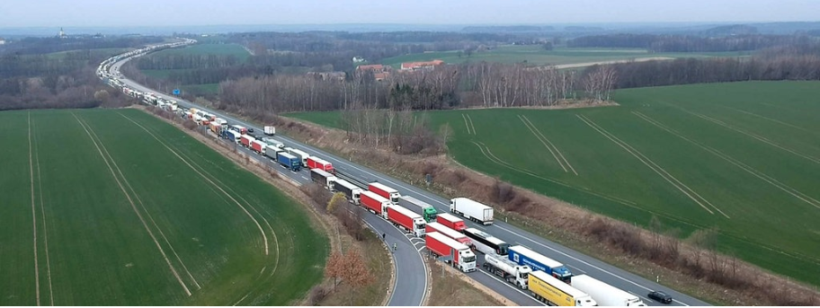
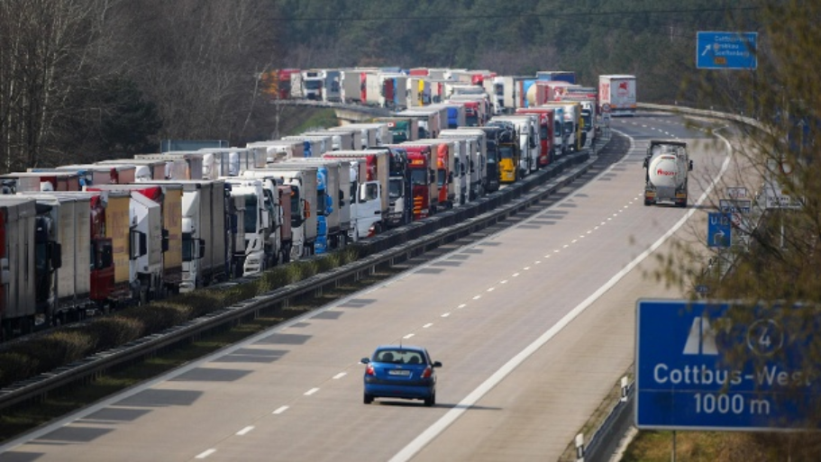
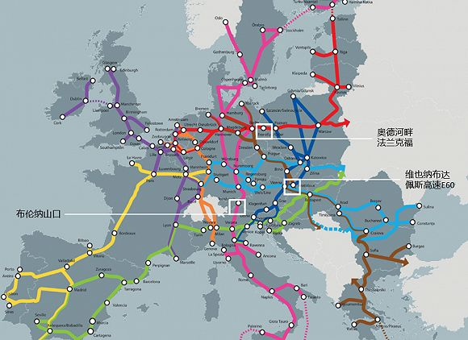
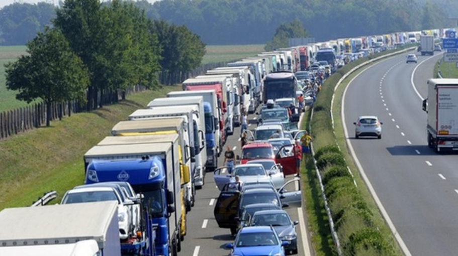

扣邻国口罩、单方面封边境：当“散装”欧盟遇上新冠危机
原文链接 备份链接 图虫 特约作者：钱伯彦 “ 多边协商与交流曾是欧盟立足于充满矛盾的世界上的最大招牌，但在大难临头之际这块招牌却不见了。 ” 一方面是搭载着31吨医疗物资和医护人员的外援飞机降落在意大利罗马菲乌米奇诺机场，另一方面则是同 …
特约记者：钱伯彦 发自德国
“
2019年欧盟内部市场77%的货物流转都通过公路交通完成，铁路与内河航运分别占据17%和6%的份额。
”
流通一体化的欧盟，内部国家之间边境线是什么样子？
这个问题可以在从德国、波兰边境得到最好的解答。
不同于拥有欧陆第一大机场和欧洲央行总部的美因河畔的城市法兰克福，在德国最东方与波兰接壤处的奥德河沿岸，也有一座被人遗忘的同名城市——奥德河畔法兰克福。
1945年德国战败之后，德波边境往西整体推进了数百公里，原先横跨奥德河两岸的法兰克福也因此以奥德河为界被硬生生地拆成了两座城市：河西的法兰克福以及河东的波兰城市斯武比采（Słubice）。原先横跨奥德河的大桥也变成了德国（东德）与波兰之间最重要的边境关卡。
2007年，随着波兰加入申根区，两座分开了近60年的城市再度合体，人为设立的边境终于消失。一夜之间，800名当地的边检人员几乎尽数失业。再也没有冷冰冰的减速带和障碍栏，奥德河大桥上只有一块写着“斯武比采和法兰克福，没有边境”的标志提醒着人们，这里曾经是边境。标志的上方则是蓝底金星的欧盟国旗。
不过，自上周一起，奥德河大桥仿佛又回到了“冷战时代”。
80名临时招募的边检人员以及数名身着防护服的检疫人员在大桥波兰一侧拦下所有车辆。根据波兰政府于3月14日发布的封锁令，除本国居民外所有人员不允许进入波兰，仅有货物输运车辆等少部分群体例外。
针对货车司机，需要体温检测、运载货物申报以及手动填写详尽的个人信息表，便于追踪等措施依然必不可少。
边境管制的恢复直接导致大面积的拥堵。
作为欧洲高速公路网中连接欧盟核心区与东欧及俄罗斯的主干道，奥德河大桥所属的E30高速，不仅是欧盟最高等级的高速公路，更是波罗的海三国进入欧盟核心区的唯一路上通道。自从波兰加入申根区之后，E30奥德河段的日均车流量就从2.5万辆次一路上升至如今的超过4万辆次。
每日早上6时起，双向四车道的E30高速奥德河段货运车辆堵车长度便从数百米开始持续增加。中午时分，拥堵长度开始超过40公里，在傍晚高峰时刻，动弹不得的车队更是直接堵到了70公里之外的柏林绕城高速。
事实上，只要打开谷歌地图的实时路况，不论是德波边境的E30高速，或者德法边境的斯特拉斯堡跨莱茵河大桥，还是贯穿阿尔卑斯山的意大利奥地利边境的布伦纳山口，所有路段皆是拥堵的鲜艳红色。
其中疫情最为严重的意大利邻国，早早宣布封锁边境的奥地利更是在布伦纳山口和南蒂罗尔地区设下了重重关卡，该些地区的拥堵车流长度普遍在80公里以上。
“在这个周末（3月21日至22日），我们部分过境点的拥堵车流超过了40公里，司机的等候时间更是长达18小时以上，这（情况）必须停止！”欧盟委员会主席冯德莱恩的讲话足以说明情况有多么紧急。

E30高速上的拥堵车流。图源 MDR

图源：T Online
这也恰恰是欧盟各国纷纷宣布封锁边境后，欧盟内部市场名存实亡下的真正写照。
随着新冠疫情的日趋恶化，欧盟主要国家纷纷于上周仿效意大利宣布禁足令或仿效德国禁止两人以上的集会。随着饭店、酒吧、快餐店等一系列公共场所悉数关闭，超市及食品零售业却迎来了大幅度的业绩增长。
据《每日镜报》报道，仅柏林地区的超市零售业销售额在3月上半月就因疫情影响同比上涨了三分之一以上。囤货行为导致意大利面货柜空空如也以及永远脱销的卫生纸。
“为什么我们的超市这么蠢？”在推特以及欧洲各国的脱口秀节目上，质疑零售商为何不提高进货频率、追加订单的疑问始终是个热门话题。
其实，所有欧洲零售商都在追加订货，所有物流供应商都在超负荷运转，但真正的瓶颈在于，意大利面和卫生纸正连同运载它们的货车一样被堵在各国边境线上。
发达的公路网络、全欧交通网络TEN-T的统一管理、分散的人口聚集区以及相对狭小的国土面积，都使得公路交通在欧盟内部货运市场占据了不可动摇的核心地位。
根据欧盟统计局的公开资料，2019年欧盟内部市场77%的货物流转都通过公路交通完成，铁路与内河航运分别占据17%和6%的份额。作为欧盟核心国家的法国，公路物流的占比更是高达86%。
无论是主要产自意大利的通心粉，还是从荷兰进口的卫生纸原料植物纤维。得益于二十余年来推进的无边界内部市场，欧洲各国的日用品对外依存度极高。
最为典型的例子是，波兰封国之后，波罗的海三国变成了欧盟孤岛。路上交通被一度切断的爱沙尼亚甚至不得不在3月20日派出船只通过波罗的海将本国国民和日用品从德国运送至首都里加，而立陶宛当局则估计每天有420辆货车被堵在德波边境无法返回。

目前三个拥堵状况最为严重的路段分别是德波边境的法兰克福、奥地利匈牙利边境以及布伦纳山口。三处路段分别是德法两大欧盟核心区域通往波罗的海三国、巴尔干半岛和亚平宁半岛的主要陆路枢纽。图源：EU
一边是不允许中断的公路物流，一边是日趋严控的边境检查，货车司机们在两头挤压下坚持工作。
在德国电视台RTL周末档的《疫情期间的英雄》节目以及推特热搜中，除了奋战在第一线的医护人员，货车司机们是当之无愧的第二名群体。
“不管发生什么，我们只管继续开车”，52岁的运输公司老板兼司机Karlhubert Dischinger面对镜头保持着朴素的乐观：“病毒对于物流行业不是福音也不是诅咒，这是个巨大的挑战，但也是向人们证明我们司机工作重要性的机会，我们准备好了。”
不过，乐观仍难以敌过边境上艰苦的条件。
3月17日起，德国国防军与德国红十字会已经纷纷派遣大量士兵与志愿者前往E30高速，目的不在于维护秩序，而是为司机们提供必要的饮食和供水服务。
但十余个小时的等待还不是司机们所要面对的全部。由于初期管理的混乱以及德波两国协调的缺位。
法兰克福横跨奥德河的两座桥梁在未经通知的情况下，被强行划分为市区桥梁仅允许客运车辆通过，而E30高速才对货运车辆开放。在《每日镜报》的网络直播中，一位来自白俄罗斯的货运司机就在耗费9小时却被告知排错了过境关卡之后濒临崩溃。
更令拥堵情况恶化的是，相比于货运，客运车辆特别是波兰返乡人群拥有更高的优先通过权。所有载货车辆都被要求在慢车道以及紧急停车道上等待客运车辆先行通过。
“我们照做了，我已经等待了19个小时了，我们给老板致电寻求帮助，老板许诺会来帮我们，但实际上什么也没有来”，一位波兰司机在推特上频繁更新的状态背后，则是货车司机们的焦虑：十余个小时的等待可能意味着即将见底的柴油，对于运送法国水果和德国黄瓜的司机们来说，柴油的耗尽也代表着冷柜制冷系统的停工以及全车货物的血本无归。
此外，相比于因为工资与驾驶时长挂钩而淡定地刷着手机的德国司机们，东欧的运输公司往往依据行驶里程来支付司机工资，长时间的拥堵也意味着司机个人巨大的时间成本。
为了改善内部边境上的拥堵状况并保证物流畅通，欧盟各国交通部长已于3月19日举行了部长级会议，原则上一致同意建立绿色通道机制，给予所有物资运输以快速清关的优待条件。
但是截至发稿，关于如何设置绿色通道优惠条件以及在哪些关卡设立绿色通道等细节问题上，欧盟各国仍未取得最终一致。以连接奥地利匈牙利两国的E60高速为例，3月17日夜间匈牙利政府临时宣布开放边境，极大地缓解了通往布达佩斯方向的交通状况。但在3月18日，再度恢复边检的关卡一侧再次出现超过30公里的拥堵。而E30高速也是欧盟核心国家通往巴尔干半岛的最重要的路上交通生命线。

奥地利意大利边境的布伦纳山口。图源：salto

奥地利匈牙利边境的E60高速。图源：Visagrad
3月23日，不满于现状的欧盟委员会再次敦促27个成员国解除边境限制并允许货运车辆在15分钟内完成通关。此外，随着德国奥地利等国医疗物资出口禁令的放松，欧委会还要求绿色通道应向运载任何物资的车辆保持开放。
不过，正如德国货运物流协会会长Dirk Engelhardt所言：“（欧委会的）方向是正确的，但是部长们的决议依然只是隔靴搔痒。”此前德国运输行业协会就已经表示，由于餐饮业和汽车供应链的停摆，各大物流公司其实拥有空余的运力以填补零售业增加的运输需求，但最大的问题却在于人本身。
“当波兰或捷克司机拉完货回到家乡之后，就必须接受14天的自我隔离，”德国运输行业协会主席Frank Huster指出眼下的隐患在于货车司机数量的短缺。这也意味着，每位东欧国家司机的返程都是一张单程票，即使司机身体完全健康，也将有两周时间无法工作。东欧的货运司机正像战场上的消耗品一样被损耗着。
一直以来，薪资待遇和职业形象皆不佳的货运司机就存在着大范围的缺人现象。据德国运输行业协会的统计数据显示，每年近3万名职业司机退休之后仅有1.5万名新鲜血液补充。而在全欧盟范围内，行业协会IRU的统计数据显示，欧洲的货运司机平均年龄为47岁，依照现有年龄结构计算，到2027年欧洲该行业将存在18.5万个岗位缺口。
无论是短途货运接近2000欧元的税前月薪，还是长途货运4500欧元左右的税前待遇，都已经无法吸引欧洲年轻人投入物流行业。向东欧国家挖人也成为了发达西欧国家的唯一选择。
目前德国拥有社保的50万名职业货运司机中有20%来自东欧国家，主要是波兰、罗马尼亚和捷克。全欧洲范围内目前物流行业缺口的半壁江山皆由波兰和罗马尼亚两国司机填补。
此次新冠疫情则一次性暴露了物流行业从业人员结构的缺陷。3月18日，当波兰政府继宣布封锁边境后又宣布所有归国人员都需要进行14天隔离时，德国和法国几乎所有挂着波兰牌照的货车无论载货与否都迅速涌向边境，希望在一天一变的政策落地之前回到家中。
谁来填补东欧司机缺位之后更加紧张的司机岗位缺口？德国交通部长朔伊尔的建议是出动国防军士兵充作汽车兵，而奥地利的答案则是放宽针对货车司机的交通法规，其中就包括货运司机每周工作时间不得超过56小时，连续两周工作时间不得超过90小时，每天驾驶时间不得超过11个小时以及4.5小时的驾驶时间之后必须强制休息15分钟。奥地利方面已经宣布将在30天之内暂停该些硬性规定，通过货运司机的超时加班以保证物流畅通。
不过，随着默克尔于3月22日宣布禁止德国两人以上的集会，即便是本国的货运司机也即将面临一个更为困难的问题：谁来保障司机们的吃喝拉撒问题。
默克尔的禁令已经导致高速公路上服务区的餐饮机构几乎系数息业，目前仅有加油站旁的便利店、自动贩卖机以及自助式公厕仍保持开放。
正如推特上的“疫情时期的英雄们”下的副标题所述，又有谁来保障那些保障我们生活的人群的权益呢？
未经授权 禁止转载

原文链接 备份链接 图虫 特约作者：钱伯彦 “ 多边协商与交流曾是欧盟立足于充满矛盾的世界上的最大招牌，但在大难临头之际这块招牌却不见了。 ” 一方面是搭载着31吨医疗物资和医护人员的外援飞机降落在意大利罗马菲乌米奇诺机场，另一方面则是同 …
原文链接 备份链接 体坛周报全媒体驻德国记者 杨子江 德国总理默克尔昨天做了全国性的电视演讲，这是她上任以来的第一次电视演讲（除了每年的新年讲话之外）。外界普遍认为，默克尔目前面对的危机，远远大于2015年难民危机，因为欧盟内部发出“破裂 …
原文链接 备份链接 图片来源：图虫 “ 一些成员国已宣布禁止对包括欧盟国家在内的外国出口防护设备。欧盟官员表示，理解各国首先要保护本国民众，但禁令将影响欧盟共同应对疫情的能力。 ” 随着欧洲新冠病毒肺炎确诊病例超过7000，欧盟各国卫生部 …
原文链接 备份链接 体坛周报全媒体驻德国记者 杨子江 德国人喜欢度假和旅游，之前德国媒体披露说德国封边境的时候还有10万德国游客在海外，但事实证明这一数据并不准确。德国外长马斯披露说，德国在境外的游客至少有20万，经过这几天疯狂的撤侨，也 …
原文链接 备份链接 壹 3月2日，Daniel Menichella（丹尼尔·梅尼切拉）应邀到美国白宫参加了一场特殊会议。和他坐在一起的，有美国总统特朗普、副总统彭斯、美国新冠病毒特别工作小组，以及十家著名医药公司的高级代表。 丹尼尔· …